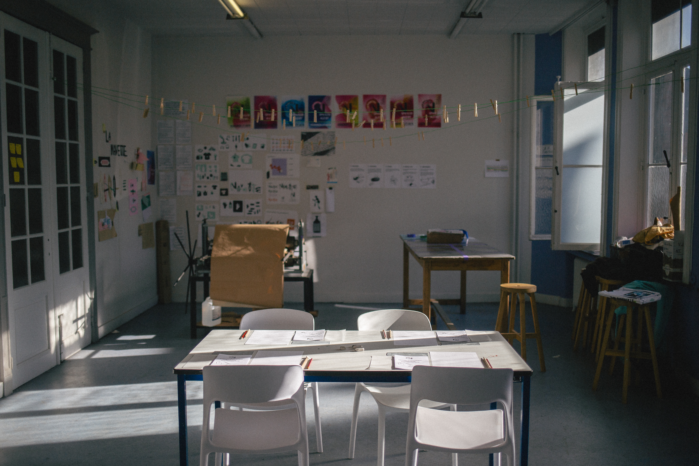
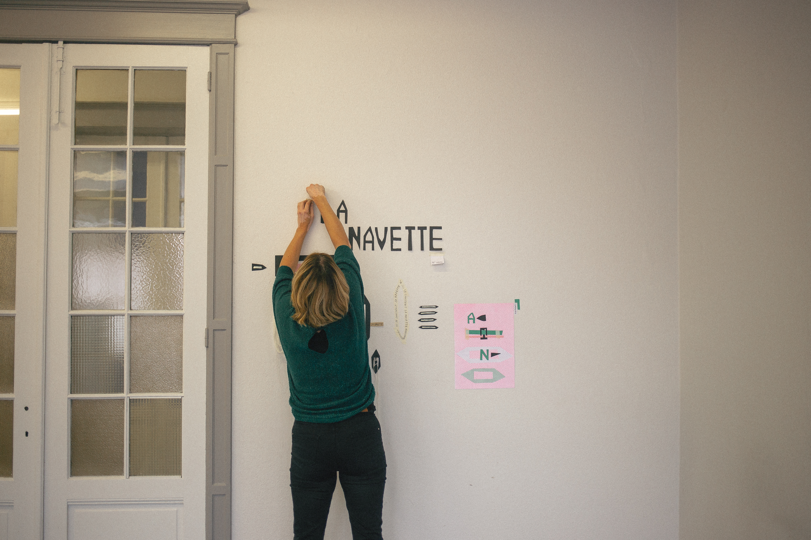
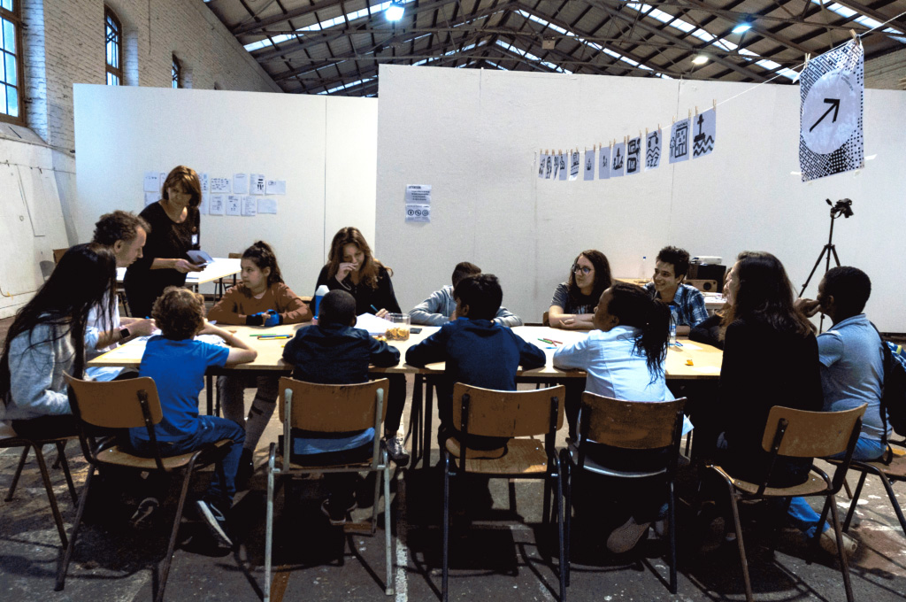

Le design social, c'est quoi ?
Le design social considère le design comme un outil de recherche, de réflexion collective et de transformation sociale. Il mobilise les compétences artistiques, graphiques et numériques pour répondre à des enjeux contemporains tels que l'inclusion, l'écologie, la citoyenneté ou les mutations des territoires.
Chaque projet prend naissance dans un contexte réel — territoire, association, institution, collectif ou espace public — où l'observation, l'enquête et le dialogue permettent de comprendre les besoins avant toute phase de conception. Les solutions sont développées avec les personnes concernées, à travers des démarches de co-conception, d'expérimentation et de recherche-création. Le design devient ainsi un processus collaboratif qui produit à la fois des projets, des connaissances, des méthodes et des ressources partageables.

À l'ESA Saint-Luc, il se passe quoi ?
Le master en design social est conçu comme un espace de recherche, d'expérimentation et de création où les projets se construisent au contact direct des réalités de terrain. Le design y mobilise le graphisme, les arts numériques, les technologies open source, low-tech et les méthodes participatives pour concevoir des dispositifs adaptés à des contextes variés.
La démarche privilégie les projets menés avec des partenaires issus des secteurs culturel, social, éducatif, institutionnel ou associatif. Chaque projet devient l'occasion de construire une méthodologie située, de produire des connaissances et d'interroger le rôle du design comme levier de transformation sociale. Les croisements entre disciplines permettent d'aborder la complexité des enjeux contemporains. Le design y est envisagé comme une pratique réflexive où création, recherche et engagement évoluent conjointement.
Projets collectifs et annuels
Les projets, collectifs et annuels, explorent des domaines tels que le graphisme de service, le design social, les arts numériques, les technologies open source, les espaces publics, la médiation, l'éducation ou les transitions écologiques. Les formes produites sont multiples : identités graphiques, dispositifs participatifs, éditions, outils numériques, installations, ressources pédagogiques ou protocoles d'intervention. Au-delà des réalisations, chaque projet contribue à produire des méthodes, des savoir-faire et des ressources qui peuvent être documentés, partagés et réutilisés dans d'autres contextes.
Le terrain en soi est le projet. D'après observation, enquête, rencontres avec les acteurs concernés, expérimentations et tests de propositions, il se construit des réponses adaptées aux réalités rencontrées. Cette alternance entre immersion, conception, prototypage et analyse permet de développer une méthodologie de projet centrée sur l'humain, la collaboration et l'expérimentation. Les productions réalisées deviennent autant de supports de réflexion que de leviers d'action, nourrissant une pratique du design attentive aux enjeux sociaux, culturels et environnementaux.
2026
Votez MAL
En collaboration avec l’ASBL Zone-Art à Verviers, association favorisant l’expression artistique de personnes en situation de handicap, ce projet imagine et développe un parti politique fictif. À travers le graphisme, l’écriture et la mise en scène, il interroge les mécanismes de la représentation, de la démocratie et de l’engagement citoyen.
2025
La Navette
Mené avec l’ASBL Spray Can Arts, ce projet accompagne la réflexion autour de la transformation d’une ancienne école du quartier Saint-Léonard en tiers-lieu culturel. Il explore les usages, les imaginaires et les outils de médiation permettant de concevoir un espace dédié à la création, aux rencontres et aux initiatives collectives.

2024
Waiting Zone
Développé avec l’Îlot Citoyen et le centre d’accueil L’Envol à Bierset, ce projet réunit des demandeurs d’asile autour d’ateliers de typographie, de collage et de dessin. Ces explorations donnent naissance à un jeu vidéo qui raconte des parcours de vie, des récits et des expériences de migration.
2023
Ville Partagée
Ce projet expérimente des dispositifs de design urbain participatif afin de sensibiliser aux réalités du sans-abrisme. Il propose des outils de médiation favorisant le dialogue, la compréhension mutuelle et une réflexion collective sur l'espace public.
2022
Zone Tampon
Réalisé avec un groupe de Français Langue Étrangère (FLE), ce projet aborde les questions de migration et de mémoire à travers la fabrication collective d'objets en porcelaine. Chaque création devient le témoignage d'un parcours personnel et un support de transmission des récits de voyage.
2021
190 Degrés
Né en 2020, le projet 190 Degrés questionne le fait d'habiter et de vivre en Belgique à travers des ateliers graphiques, éditoriaux et collaboratifs. Il donne lieu à la production d'œuvres collectives, critiques et visuelles, diffusées sous licence libre afin de favoriser leur appropriation.
2020
Welcome to Bavière
Développé avec les habitantes et habitants du quartier de Bavière en Outremeuse, ce projet imagine des futurs désirables pour le territoire. Il aboutit à la conception et à la fabrication collective d'un espace de détente modulable, végétalisé et convivial, pensé comme un lieu de rencontre et de partage.

Guides
Et enfin un troisième, pas mal non plus
De quelqu'un d'autre encore
Ainsi qu'un superbe deuxième
D'une autre personne
Un merveilleux premier article
D'un ou certaine auteur.ice
Ressources externes
La Plateforme DesignSocialComptoir OpenSource ASBL
L'Atelier des Chercheurs - L'OpenDoc
Collectif BAM
LowTech Lab
Open Source LowTech
LowTech Institute
The Creative Independent